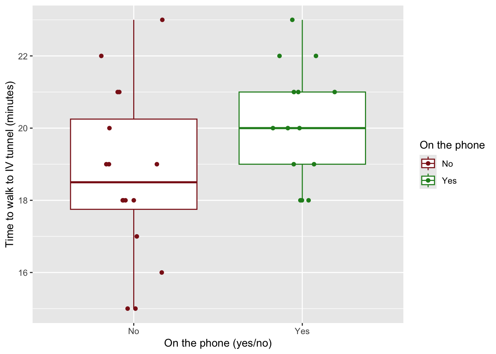

Link to GitHub Repository: https://github.com/eliana427/ENVS-193DS_homework-03.git
library(tidyverse)
── Attaching core tidyverse packages ──────────────────────── tidyverse 2.0.0 ──
✔ dplyr 1.1.4 ✔ readr 2.1.5
✔ forcats 1.0.0 ✔ stringr 1.5.1
✔ ggplot2 3.5.2 ✔ tibble 3.2.1
✔ lubridate 1.9.4 ✔ tidyr 1.3.1
✔ purrr 1.0.4
── Conflicts ────────────────────────────────────────── tidyverse_conflicts() ──
✖ dplyr::filter() masks stats::filter()
✖ dplyr::lag() masks stats::lag()
ℹ Use the conflicted package (<http://conflicted.r-lib.org/>) to force all conflicts to become errors
library(here)
here() starts at /Users/elianashandalov/github/ENVS-193DS_homework-03
library(flextable)
Attaching package: 'flextable'
The following object is masked from 'package:purrr':
compose
library(janitor)
Attaching package: 'janitor'
The following objects are masked from 'package:stats':
chisq.test, fisher.test
library(readxl)library(readr)library(dplyr)
Problem 1. Personal data
Data summarizing
I am comparing counts between groups, the “yes” on the phone group and the “no” on the phone group because I am comparing the number of minutes it takes me to walk to the IV tunnel from my house depending on if I am talking on the phone or not, which is informative because theoretically I think I walk slower when I am on the phone because I am less focused on walking. I will take the mean of each group and compare the means, while also taking the minimum and maximum, so the range will also be helpful, but I do not need to add numbers together unless it is part of my process for taking the means of each group.
Visualization
library(janitor)my_data <-read_csv("my_data.csv") # read from sample data.csv data frame, store as object
Rows: 30 Columns: 10
── Column specification ────────────────────────────────────────────────────────
Delimiter: ","
chr (4): Date, Raining: yes/no, Type of shoes, On the phone
dbl (4): Number, Temperature (degrees F), Time before class I leave (min), ...
time (2): Time I leave the house, Time I arrive at the tunnel
ℹ Use `spec()` to retrieve the full column specification for this data.
ℹ Specify the column types or set `show_col_types = FALSE` to quiet this message.
clean_data <- my_data %>%# store data as object to be cleaned, will be using clean data setclean_names() # clean the names in the data, spaces to underscores and all lowercaseView(clean_data)
ggplot(data = clean_data, # use data frame clean_dataaes(x = on_the_phone, # x-axis will be data from on_the_phone columny = time_it_takes_me_to_walk_to_tunnel_min, # y-axis will be data from time_it_takes_me_to_walk_to_tunnel_min columncolor = on_the_phone)) +# color based on yes or no in on_the_phone columngeom_boxplot() +# create a boxplotgeom_jitter(position =position_jitter(width =0.2, # jitter the points with a horizontal distance of 0.2height =0)) +# no vertical jitterlabs(x ="On the phone (yes/no)", # name x-axisy ="Time to walk to IV tunnel (minutes)", # name y-axiscolor ="On the phone") +# name leegendscale_color_manual(values =c("firebrick4", "forestgreen")) # change colors of jittered points/box plots

clean_data <- clean_data |># fixing original datamutate(time_it_takes_me_to_walk_to_tunnel_min=as.numeric(time_it_takes_me_to_walk_to_tunnel_min)) # make r read data from this column as numerical valuesmean_yes <- clean_data |># create new object for when I am on the phone from clean_data framefilter(on_the_phone =="Yes") |># filter by when I am on the phonesummarize(mean_yes =mean(time_it_takes_me_to_walk_to_tunnel_min, na.rm =TRUE)) # take the mean of the time it takes me to walk to tunnel in minutes when I am on the phonemean_no <- clean_data |># create new object for when I am not on the phone from clean_data framefilter(on_the_phone =="No") |># filter by when I am not on the phonesummarize(mean_no =mean(time_it_takes_me_to_walk_to_tunnel_min, na.rm =TRUE)) # take the mean of the time it takes me to walk to tunnel in minutes when I am not on the phonedata_summary <- clean_data |># use clean_data frame to create the object to summarize datagroup_by(on_the_phone) |># group by yes or no on the phonesummarize(mean =mean(time_it_takes_me_to_walk_to_tunnel_min), # take the mean of both yes and non =length(time_it_takes_me_to_walk_to_tunnel_min), # count the number of values in each category to total the observationsdf = n -1, # degrees of freedom is the number of observations minus 1sd =sd(time_it_takes_me_to_walk_to_tunnel_min), # find standard deviation of both categoriesse = sd/sqrt(n), # find standard error of both categories using this formulatval =qt(p =0.05, df = df), # find the t-value for both categoriesmargin = tval*se, # find the margin of error for both categoriesci_lower = mean - tval*se, # find the lower bound confidence interval for both categoriesci_higher = mean + tval*se) # find the upper bound confidence interval for both categoriesdata_summary # view the data summary in the console which displays all these values
# A tibble: 2 × 10
on_the_phone mean n df sd se tval margin ci_lower ci_higher
<chr> <dbl> <int> <dbl> <dbl> <dbl> <dbl> <dbl> <dbl> <dbl>
1 No 18.7 16 15 2.33 0.583 -1.75 -1.02 19.7 17.7
2 Yes 20.1 14 13 1.61 0.430 -1.77 -0.762 20.9 19.4
Caption Figure 1. Talking on the phone tends to make me take longer to walk to the IV tunnel from my house. Data from ‘my_data’ package (Shandalov EB, 2025). Points represent observations of the time (minutes) it took me to walk to the IV tunnel and plotted based on whether I was on the phone or not (total n = 30). Colors represent if I was on the phone and if I was not on the phone (red: no, green: yes).
Warning: There was 1 warning in `mutate()`.
ℹ In argument: `across(...)`.
Caused by warning:
! The `...` argument of `across()` is deprecated as of dplyr 1.1.0.
Supply arguments directly to `.fns` through an anonymous function instead.
# Previously
across(a:b, mean, na.rm = TRUE)
# Now
across(a:b, \(x) mean(x, na.rm = TRUE))
ft <-flextable(head(data_summary_rounded),col_keys =c("on_the_phone", "mean", "n", "df", "sd", "se", "tval", "margin", "ci_lower", "ci_higher")) |>set_header_labels(mean ="Mean", on_the_phone ="On the phone", n ="Observations", df ="Degrees of freedom", tval ="T-value", margin ="Margin of error", sd ="Standard deviation", se ="Standard error", ci_lower ="95% CI lower", ci_higher ="95% CI higher") |>autofit()ft